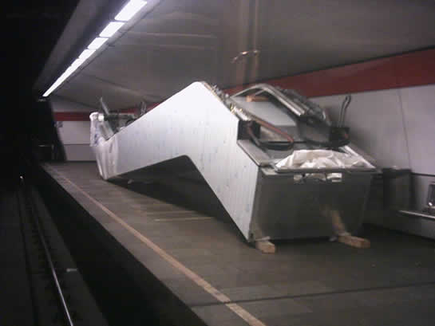
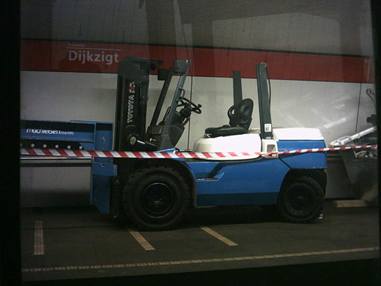
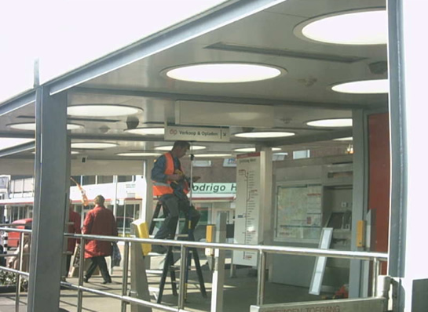
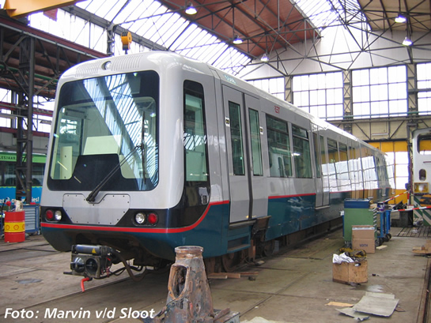
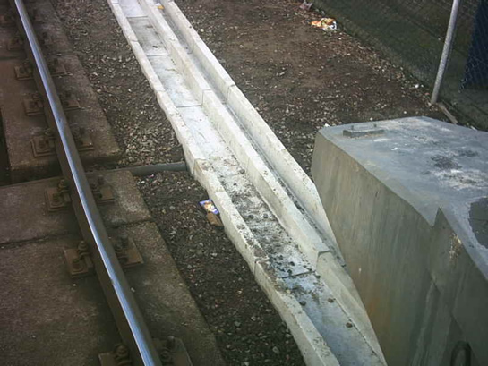
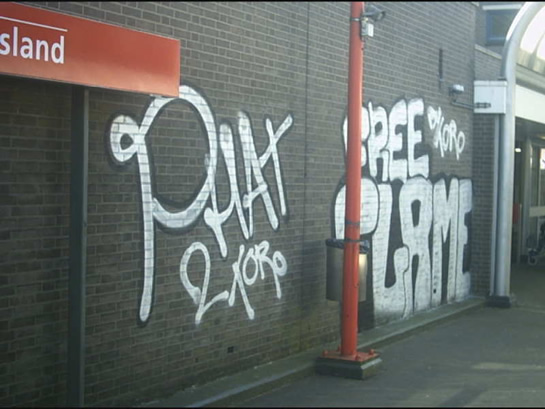

Metronieuws van afgelopen week...
- dinsdag 09 december 2008 10:54
- Geschreven door Joachim
Zoals bekend zijn onlangs de roltrappen van station Oostplein vervangen. Inmiddels is de afwerking van de roltrappen voltooid en zijn de roltrappen in dienst gesteld. Ook op station Dijkzigt worden komende week nieuwe roltrappen geplaatst. Deze zijn al aangeleverd via het metrospoor per platte wagen. Hieronder enkele foto's van de situatie op station Dijkzigt.

De nieuwe roltrap op spoor 2. De roltrappen worden geleverd per platte wagen.

Met deze vorkheftruck worden de roltrappen naar hun plaats van bestemming gebracht. Ook deze voertuigen zijn via het metrospoor per platte wagen aangeleverd.
Marconiplein
De hal van station Marconiplein wordt verbouwd. De wand wordt opnieuw betegeld en er wordt geverfd. Bij het vernieuwen van de hal komt veel stof vrij, daarom is een deel van hal ingepakt in blauw zeil. Ook hier zullen nieuwe roltrappen geplaatst worden.
OV-Chipkaart
De metrostations worden voorzien van een nieuwe bewegwijzering voor de OV-Chipkaart. Een bord met daarop het OV-Chipkaartlogo en de tekst "Verkoop & Opladen" zijn al op meerdere stations geplaatst, zo ook op de sneltramstations.

Sneltramstation Hesseplaats, het bord "Verkoop & Opladen" is zojuist geplaatst.
Ook worden er 500 extra niet-roken-bordjes geplaatst op de Rotterdamse metrostations, dit met het oog op de aangescherpte tabakswet. Op overtreding van het rookverbod volgt een geldboete van minimaal €50, die hoger kan oplopen naarmate de overtreder vaker de regel overtreedt.
Door de komst van de OV-Chipkaart is ook de Wet Personenvervoer deels aangepast. Misbruik of vernieling van OV-Chipkaartapparatuur en aanverwanten wordt beboet met een bedrag van minimaal €50. De schadekosten worden volledig verhaald op de daders. Ook de huisregels en maatregelen bij overtreding op de metrostations worden duidelijk gemaakt middels informatieborden. Voor meer informatie over de OV-Chipkaart, klik hier.
Rijtuig 5348
Zoals eerder gemeld is afgelopen week metrostel 5348 overgebracht naar Centrale Werkplaats Kleiweg, voor schadeherstel. Het metrostel staat in de werkplaats op spoor 6. Hieronder een foto van het rijtuig.

Rijtuig 5348 in CW Kleiweg op spoor 6. Rechts één van de diesellocomotieven van het metrobedrijf die momenteel in revisie is.
Geen metroverkeer
De hinder voor de reiziger als gevolg van de werkzaamheden tussen metrostations Beurs en Centraal Station, lijken mee te vallen. De RET heeft extra trams ingezet tussen metrostation Beurs en Centraal Station. Op station Beurs worden de metrotreinen leeggehaald door RET-personeel, waarna gekeerd wordt op wisselcomplex Beurs.
Het keerproces verloopt vlot, omdat er een bestuurder in de achterste cabine meerijdt, die de metrotrein direct terug kan rijden naar station Beurs spoor 2. Het proces waarbij de metrobestuurder door de tunnel naar de andere kant van de metrotrein moet lopen, wordt hiermee vermeden, dit bevordert de exploitatie-snelheid.
A.s. maandag een speciaal nieuwsitem over de situatie rond Beurs, Stadhuis en Centraal Station.
Downchopper
De HTM heeft een downchopper, afkomstig uit een van haar aangekochte trams uit Hannover, verkocht aan de RET. Naar verluid wil de RET de downchopper gaan inbouwen in één van de metrorijtuigen om hiermee te gaan testrijden op de Hofpleinlijn, welke in 2006 door de RET geëxploiteerd gaat worden.
Een downchopper is een elektronisch component, dat zorgt voor een omvorming van de spanning van 1500V gelijkstroom naar 750V gelijkstroom. Wanneer een metrotrein gevoed zou worden met 1500V, zou dit leiden tot "special effects".
Informatie over de Hannoverse trams in Den Haag, klik hier.
Zevenkamplijn
Op de Zevenkamplijn worden nieuwe kabelkokers gelegd, o.a. met het oog op de aansluiting van de Nesselandelijn. Hierdoor wordt in de avonduren regelmatig enkelspoors gereden tussen station Nieuw Verlaat en De Tochten v.v.

Nieuwe kabelkokers: station Ambachtsland spoor 2. De nieuwe kabelkokers worden o.a. geplaatst voor de doortrekking van de metrolijn naar Nesselande.
Op station Ambachtsland is de afgelopen week weer een dikke laag graffiti aangebracht op de muur. De bekladdingen zijn vrij ernstig. De laatste tijd vallen de bekladdingen ín de metrorijtuigen echter mee.

Graffiti op een van de muren van sneltramstation Ambachtsland.